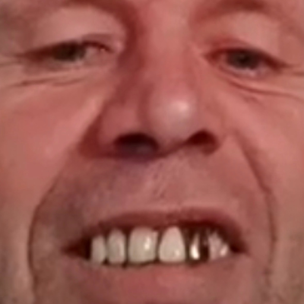

?
Я
…
ожидание

alloconnectЗвонки, демонстрация экрана, чат и файлы с друзьями. Напрямую, без серверов. Первый раз — короткий код дружбы через любой мессенджер, дальше — из списка друзей в один клик.
Приложение определит тип кода перед действием.